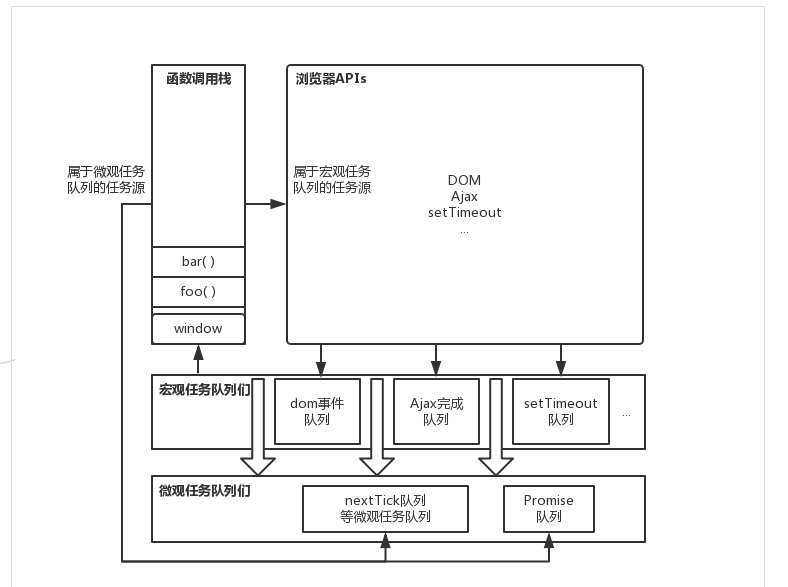

目录
1.背景介绍
2.知识剖析
3.常见问题
4.解决方案
5.编码实战
6.扩展思考
7.参考文献
8.更多讨论
JavaScript语言的一大特点就是单线程，也就是说，同一个时间只能做一件事。那么，为什么JavaScript不能有多个线程呢？这样能提高效率啊。 JavaScript的单线程，与它的用途有关。作为浏览器脚本语言，JavaScript的主要用途是与用户互动，以及操作DOM。这决定了它只能是单线程，否则会带来很复杂的同步问题。比如，假定JavaScript同时有两个线程，一个线程在某个DOM节点上添加内容，另一个线程删除了这个节点，这时浏览器应该以哪个线程为准？ 所以，为了避免复杂性，从一诞生，JavaScript就是单线程，这已经成了这门语言的核心特征，将来也不会改变。
Js 是单线程，js代码从上到下依次执行，比如我们写了两个函数，肯定是上面的函数先执行，下面的函数后执行。 但是这种单线程有一个非常大的问题，那就是遇到耗时的任务，后面的任务只能等待它执行完，才能进行。 比如ajax 请求，它从服务器上获取数据，这本来就耗时间, 如果网络再慢，就更耗时间，那么我们只能等待返回结果， 结果出来之后再向下执行，等待的过程中，用户什么都不能做，如果是在渲染阶段，也会阻止渲染UI, 用户只能看到空白页面，体验太差。
单线程就意味着，所有任务需要排队，前一个任务结束，才会执行后一个任务。如果前一个任务耗时很长，后一个任务就不得不一直等着。 如果排队是因为计算量大，CPU忙不过来，倒也算了，但是很多时候CPU是闲着的， 因为IO设备（输入输出设备）很慢（比如Ajax操作从网络读取数据），不得不等着结果出来，再往下执行。 但由于类似ajax网络请求、setTimeout时间延迟、DOM事件的用户交互等，这些任务并不消耗 CPU，是一种空等，资源浪费，因此出现了所谓的异步 JavaScript语言的设计者意识到，这时主线程完全可以不管IO设备，挂起处于等待中的任务，先运行排在后面的任务。等到IO设备返回了结果，再回过头，把挂起的任务继续执行下去。 吧任务挂起来，形成的执行任务的队列是任务队列。
于是，所有任务可以分成两种，一种是同步任务（synchronous）， 另一种是异步任务（asynchronous）。同步任务指的是，在主线程上排队执行的任务， 只有前一个任务执行完毕，才能执行后一个任务；
异步任务指的是，不进入主线程、而进入"任务队列"（task queue）的任务， 只有"任务队列"通知主线程，某个异步任务可以执行了，该任务才会进入主线程执行。
（1）所有同步任务都在主线程上执行，形成一个执行栈（execution context stack）。
（2）主线程之外，还存在一个"任务队列"（task queue）。只要异步任务有了运行结果，就在"任务队列"之中放置一个事件。
（3）一旦"执行栈"中的所有同步任务执行完毕，系统就会读取"任务队列"，看看里面有哪些事件。那些对应的异步任务，于是结束等待状态，进入执行栈，开始执行。
（4）主线程不断重复上面的第三步。
同步环境执行(step1) -> 事件循环1(step4) -> 事件循环2(step4的重复)…
其中的异步进程有：a、类似onclick等，由浏览器内核的DOM binding模块处理，事件触发时，回调函数添加到任务队列中；
b、setTimeout等，由浏览器内核的Timer模块处理，时间到达时，回调函数添加到任务队列中；
c、Ajax，由浏览器内核的Network模块处理，网络请求返回后，添加到任务队列中。
1、所谓的优先级究竟是什么？
微观任务队列,ES6标准中任务队列存在两种类型，
一种就是上边提到的一些队列，比如setTimeout、网络请求Ajax、用户I\O等都属于宏观任务队列（macrotask queue），
另一种是微观任务队列（microtask queue），Promise就属于微观任务队列。
添加了微观任务队列之后事件循环有什么变化呢？在执行栈执行的过程中会把属于微观任务队列的任务分配到相应的微观任务队列中去。而在调用栈执行空之后，主线程读取任务队列时，会先读取所有微观任务队列，然后读取一个宏观任务队列，再读取所有的微观任务队列。如图：

参考一：
Event loop
参考二
ES6新的事件机制
如果创建多线程
为了利用多核CPU的计算能力，HTML5提出Web Worker标准， 允许JavaScript脚本创建多个线程，但是子线程完全受主线程控制， 且不得操作DOM。所以，这个新标准并没有改变JavaScript单线程的本质。
感谢大家观看
By 杨亚洲